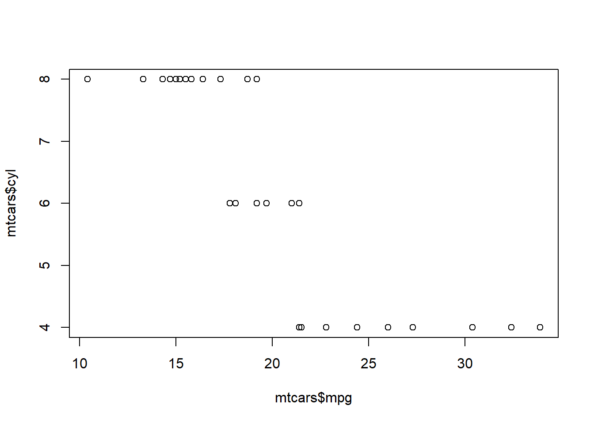

Academic workflow, certainly in political science, is at a crossroads. The American Journal of Political Science (AJPS) announced a (my words) “show your work” initiative in which authors who are tentatively accepted for publication at the journal must hand over the raw code and data that produced the results shown in the manuscript. The editorial team at AJPS then reproduces the code from the manuscript. Pending successful replication, the manuscript moves toward publication. The AJPS might be at the fore of this movement, and it could be the most aggressive among political science journals, but other journals in our field have signed the joint Data Access & Research Transparency (DART) initiative. This, at a bare minimum, requires uploading code from quantitatively-oriented published articles to in-house directories hosted by the journal or to services like Dataverse.
There are workflow implications to the Lacour controversy as well. Political science, for the foreseeable future, will struggle with the extent of the data fraud perpetrated by Michael Lacour in an article co-authored with Donald P. Green in Science, the general scientific journal of record in the United States. A failure to reproduce LaCour’s results with different samples uncovered a comprehensive effort by LaCour to “fake” data that provided results to what we felt or believed to be true (i.e. “truthiness”). However, fake data can have real consequences for both the researcher and those who want to learn from it and use it for various purposes. Even research done honestly may suffer the same fate if researchers are not diligent in their workflow.
These recent events underscore the DART push and cast a shadow over our workflow. However, good workflow has always been an issue in our discipline. Cloud storage services like Dropbox are still relatively new among political scientists. Without cloud storage, previous workflow left open the possibility that work between a home computer and an office computer was lost as a function of a corrupted thumb drive, an overheated power supply, or, among other things, the wave of viruses that would particularly affect Microsoft users every summer. Social sciences, unlike engineering, have traditionally relied on software like Microsoft Word for manuscript preparation though any word processor reduces workflow to a series of clicks and strokes on a keyboard. This is a terrible way to track changes or maintain version control. The addition of collaborators only compounds all the aforementioned issues. The proverbial left hand may not know what the right hand is doing.
I think there is reason for optimism. We only struggle with it now because we have tools like R Markdown and Pandoc, more generally, that make significant strides in workflow. LaTeX resolved earlier issues of corrupted binary files by reducing documents to raw markup that was little more than raw text and revisions that could be easily kept as “commented” text. However, for all its benefits (including pretty PDFs), LaTeX is ugly code and does not provide means of seamlessly working with the actual data analysis itself. R Markdown both eliminates markup and allows the author and her collaborators to write and reproduce the manuscript in one fell swoop.
The lion’s share of a R Markdown document will be raw text, though the front matter may be the most important part of the document. R Markdown uses YAML for its metadata and the fields differ from what an author would use for a Beamer presentation. I provide a sample YAML metadata largely taken from this exact document and explain it below.
summary(mtcars)## mpg cyl disp hp
## Min. :10.40 Min. :4.000 Min. : 71.1 Min. : 52.0
## 1st Qu.:15.43 1st Qu.:4.000 1st Qu.:120.8 1st Qu.: 96.5
## Median :19.20 Median :6.000 Median :196.3 Median :123.0
## Mean :20.09 Mean :6.188 Mean :230.7 Mean :146.7
## 3rd Qu.:22.80 3rd Qu.:8.000 3rd Qu.:326.0 3rd Qu.:180.0
## Max. :33.90 Max. :8.000 Max. :472.0 Max. :335.0
## drat wt qsec vs
## Min. :2.760 Min. :1.513 Min. :14.50 Min. :0.0000
## 1st Qu.:3.080 1st Qu.:2.581 1st Qu.:16.89 1st Qu.:0.0000
## Median :3.695 Median :3.325 Median :17.71 Median :0.0000
## Mean :3.597 Mean :3.217 Mean :17.85 Mean :0.4375
## 3rd Qu.:3.920 3rd Qu.:3.610 3rd Qu.:18.90 3rd Qu.:1.0000
## Max. :4.930 Max. :5.424 Max. :22.90 Max. :1.0000
## am gear carb
## Min. :0.0000 Min. :3.000 Min. :1.000
## 1st Qu.:0.0000 1st Qu.:3.000 1st Qu.:2.000
## Median :0.0000 Median :4.000 Median :2.000
## Mean :0.4062 Mean :3.688 Mean :2.812
## 3rd Qu.:1.0000 3rd Qu.:4.000 3rd Qu.:4.000
## Max. :1.0000 Max. :5.000 Max. :8.000plot(mtcars$mpg, mtcars$cyl)